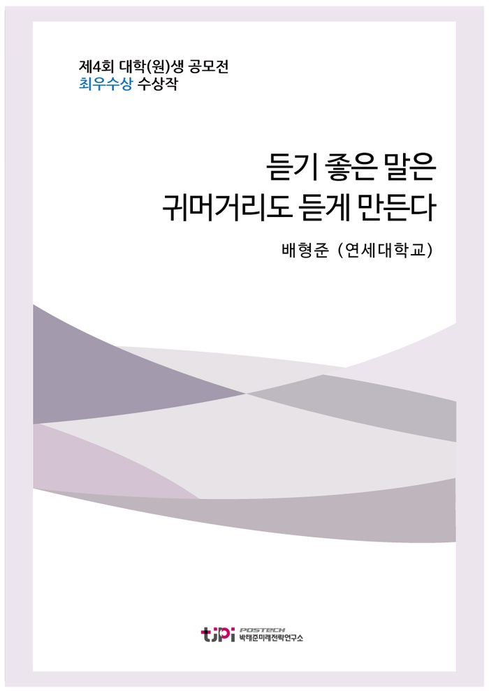

저자 배형준 (연세대학교)보도일 2017.08.01

요 약
[에세이 우수상 최수상작]
우리가 가진 '성숙함의 씨앗'은 결코 부족하지 않다. 다만 그것을 공론화시키고 확대 재생산하여 사회 저변에 공감대를 형성할 도구가 마련되지 않았을 뿐이다. 해당 도구로 대표되는 '귀 열기'에 익숙하지 못한 이유를 CRISIS라는 6가지 분야로 제시해 보았다. 이때, 해결방안이 제대로 작동하기 위한 자발적 참여 기제로서, '시민성에 대한 우호적 경험'이 중요할 것이다.
▶ 최우수상 발표 및 토론 영상 보기
<2017 에세이 공모주제>
- 우리나라 국민들의 시민의식 수준을 진단하고, 보다 성숙한 시민의식 함양을 위한 구체적인 방안을 제시하시오.
목 차
1. 들어가는 글
2. 그들이 귀를 열어야 하는 이유
3. 무엇이 우리를 귀머거리로 만들었는가?
(1) C : Curiosity(궁금증)의 부족
(2) R : Rigidness in thinking(사고의 경직성)
(3) I : Indirect communication(간접적 의사소통)
(4) S : Success oriented culture(성공 지향적 문화)
(5) I : Impatience(조급함)
(6) S : Sidestep from Criticism(비판으로부터의 회피)
4. 귀머거리의 귀를 여는 방법들
(1) S : Stimulus(자극)에 민감해지기
(2) O : Open minded to probability(개연성에 대한 개방적 사고)
(3) C : Centralized decision making system(중심화 된 의사결정 시스템) 활성화
(4) I : Infrastructure for recovery(회복을 위한 기반시설) 구축
(5) A : Accurate measurement(정확한 성과평가) 지향
(6) L : Leverage effect(지렛대 효과)의 이용
5.나가는 글
내 용
[2017 청년 에세이 최우수상] 듣기 좋은 말은 귀머거리도 듣게 만든다
배형준 (연세대학교)
1. 들어가는 글
2017년 3월, 헌정사상 초유의 대통령 탄핵 사건으로 ‘글로써의 역사’는 비로소 책을 찢고 튀어나와 ‘실재하는 역사’가 되었다. 동일한
대상을 보고도 사람마다 인식의 결과가 상이하므로 탄핵 인용의 옳고 그름에 대한 판단은 다를 수 있다. 따라서
헌법재판소의 주요 인용사유 중 일부를 살펴보면 다음과 같다. ‘대통령의 공무 수행은 투명하게 공개하여
국민의 평가를 받아야 하나, 국정개입 사실을 숨기고 의혹을 부인하여 언론에 의한 감시 장치가 제대로
작동될 수 없었다.’ 어디서부터
잘못된 것일까? 많은 이들은 ‘소통의 부재’를 주요 이유 중 하나로 보았다. 대학 입시와 취업의 전쟁에서 적군의
시체를 넘고 지나가는 방법만 배워왔던 나는 ‘듣는 것’의
힘이 그토록 거대하다는 사실에 충격을 받지 않을 수 없었다. 과연 무엇이 대통령을 불통의 프레임에 가두게
되었는지 그 요인과 해결방안을 성찰하지 않으면 같은 역사가 반복될 수 있다는 두려움에 사로잡혔다. 비단
개인의 문제가 아니다. 대한민국 ‘토양’에서 길러지고 있는 한국인이라는 ‘묘목’이 병들면 대한민국 사회라는 ‘숲’도
병들게 되는 바, 토양의 상태와 나무의 성장 환경을 면밀히 살펴 집단의 생존환경을 재검토해야 한국사회가
건강해질 수 있다.
송호근,「시민민주주의의
미시적 기초─ 시민성, 공민(共民), 그리고 복지」, p.33
송호근 교수에 따르면 ‘시민성’은 책무와 권리의식을 동시에 갖춘 균형 감각이며, 사익보다는 공익을
중시하는 윤리성이다. ‘시민성이 공유되는 사회’는 나무가
건강하게 자라나는 데 중요한 ‘환경적 요소’라고 생각한다. 이러한 환경을 조성하는 것이 건강한 국가 건설의 지상과제임은 의심할 여지가 없다. 문제는 환경적 요소를 받아들이는 뿌리와 잎사귀 같은 나무의 ‘수용기관’이 망가졌다는 것이다. 이는 시민성의 공유화 측면에서 굉장히 큰 악영향을
미친다. 개인의 수용 행위가 완전하지 못해 체화의 과정을 거치지 못한다면, 공유가치의 재생산과 파급 과정에서 그 연결고리가 끊어진 것과 같은 단절효과를 나타내기 때문이다.
동물의 입장에서의 수용기관 중 하나는 ‘귀’다. 무엇이 우리를 고집불통 귀머거리로 만들었을까? 모두가 귀를 열고 세상과 긍정적으로 상호작용하는 존재가 될 수는 없을까? 상대방의
견해를 ‘잘 듣고 체화하여 공감할 줄 아는 것’이 성숙한
시민의식 함양의 핵심이다. 이와 같은 과정이 자연스럽게 일어나기 위해 필요한 핵심적 필요조건은 ‘시민성에 대한 우호적 경험(Pleasurable experience)’이다. 칭찬은 고래도 춤추게 만드는 것처럼, 듣기 좋은 말은 귀머거리도
듣게 만드는 마법을 부릴 수 있다고 생각한다.
2. 그들이 귀를 열어야 하는 이유
현대경제연구원 경제주평, 「사회적
갈등의 경제적 효과 추정과 시사점」
현대경제연구원 주평에서는 사회적 갈등으로 인해 연간 82조
원에서 최대 246조 원의 손실이 발생한다고 추산했다. 과도한
사회적 긴장과 갈등은 비단 심리적 고통으로 끝나는 것이 아니라, 심리변수에 영향을 미쳐 경제전반에 큰
파장을 일으킬 수 있다는 것이다. 이때 사회적 갈등이란, 사회적
쟁점에 대해 최소 두 당사자가 서로 다른 입장을 갖고 대립하여 긴장이 발생되는 상황을 의미한다고 정의된다. 우리나라의
사회적 갈등이 크게, 그리고 지속적으로 나타나는 분야는 정치다. 격동의
산업화와 민주화를 거치며 사회적 갈등은 수도 없이 이어져왔다. 우리나라에도 민주주의가 도입되기는 했으나
문제는 불완전한 정착의 양태를 보인다는 것이다.
이 과정에서 내가 주목하고 싶은 점은 아래로부터의 민주주의에 대한 요구는 지속적이었던 반면, 위로부터의 자발적 수용에 대한 노력이 부족했다는 것이다. 스웨덴
최고의 금융가문인 발렌베리 가문은 스웨덴 국내총생산의 30%를 차지하는 14개 대기업의 소유주다. 이들은 한국의 재벌과 마찬가지로 지배층으로
분류되지만, 재별과는 확연히 다른 지배원칙을 고수하고 있다. 발렌베리
가문은 노조 대표를 이사회에 중용하고, 이익의 85%를 법인세로
사회에 환원하며 기업의 생존 토대는 사회라는 점을 강조한다. 스웨덴 국민들은 발렌베리 가문을 자긍심으로
여기며, 존경한다. 반면 한국 재벌의 형성 토대인 피라미드식
위계질서는 소수인 권력자의 시각이 사회 전반으로 나비효과를 일으킬 수 있는 구조를 형성했다. 여기서
문제는 부와 권력을 가진 자들이 하층민의 삶을 돌보려는 노력을 게을리 하고, 귀를 닫음으로써 충언을
무시할 때 사회 전체적으로 부정적인 결과를 초래할 수 있는 완벽한 환경이 조성된다는 것이다.
지배계층의 잘못된 의사결정은 중산층과 하층을 삶을 파괴시킬 수 있다. 그들의 붕괴는 공공선(common wealth)의 형성을 불가능하게
한다. 송호근,「시민민주주의의
미시적 기초─ 시민성, 공민(共民), 그리고 복지」, p.35
송호근 교수에 따르면 공공선을 만드는 기제는 복지정치다. 복지정치는
임금생활자로 하여금 삶의 여유를 갖게 할 뿐 아니라, 자신의 작업과 노동이 공익과 연결되어 있다는 긴장감을
유지하도록 만든다. 자신의 노동이 공동체의 공익에 기여한다는 연대감을 가질 때 시민성이 생겨난다는 것이다. 공공체와의 연대감을 사회 저변에 확산시킨 기제가 된 발렌베리 가문의 사례는 우리나라에서 정착이 불가능한, 꿈과 같은 이상일 뿐일까?
나는 이것이 전혀 도달할 수 없는 유토피아를 향한 일방적 지향은 아니라고 생각한다. 위에서 언급한 피라미드 체계를 뒤집어 생각해보면 고위층의 노블레스 오블리주를 자연스럽게 이끌어낼 수 있을 때, 그 파급효과가 클 것이라고 추론된다. 언제까지 윗사람들의 배려, 도덕심에 개인의 삶을 맡길 수는 없다. 강요에 의하지 않고 유연하게
개입함으로써 선택을 유도하는 ‘넛지 효과’를 도입한다면 언제
사과나무에서 사과가 떨어질까를 고대하는 애처로운 기다림을 어느 정도 없앨 수 있다고 생각한다. 애덤
스미스는 <도덕감정론>에서 사회질서의 기초를 구성하는
원리, 즉 도덕 원리는 감정에 근거한다고 생각했으며, 특히
동감(sympathy)의 원리를 강조했다. 동감의 감정과
이에 따른 공감능력을 바탕으로
긍정적 낙수효과가 나타났을 때야말로 시민성에
대한 공감대가 사회 저변으로 확산될 수 있는 확실한 토대를 마련할 수 있다. 그렇다면 어떻게 그들로부터
동감의 감정을 이끌어낼 수 있을까?
이런 선순환 구조를 이끄는 기제의 핵심은 ‘시민성에
대한 우호적 경험(Pleasurable experience)’이다. 한
번 경험으로 지속성을 이끌어내는 힘은 ‘자발성’에 의해 나타날
수 있기 때문이다. 한국의 재벌이 사람들의 존경과 칭찬, 그리고
관심의 대상이 되었을 때, 즉 그들을 축포가 터지는 스포트라이트 위에 올려놓았을 때 그들은 우호적 경험을
하게 되고, 자발적 참여 동기를 형성하게 될 것이다.
그러나 나의 에세이는 재벌과 고위 인사들의 태도변화만을 꾀하는 글이 아니다. 고위 인사도 중요하지만 더 중요한 사회적 구성원은 막대한 정보력을 가진 개인이나 언론, 혹은 사회단체 정도가 될 것이다.
앞으로 서술하겠지만 그들이 사회적 자극(Stimulus)에
민감하고, 피고용자의 의견에도 답이 있을 수 있다는 가능성에 열린 마음을 가지고(Open minded to probability), 중심화 된 의사결정 시스템을 구축하고(Centralized decision making system), 사회적 약자의 경제적 회복을 지원하며(Infrastructure for recovery,), 좀 더 정확한 성과평가를 지향하고(Accurate measurement), 의사결정 참여자들의 지렛대 효과(Leverage
effect)를 적극적으로 이용할 수 있는 분위기를 조성할 때 권력자들의 귀가 열릴 것이다.
이제 나는 힘의 우위에 있는 자들이, 더 나아가 대한민국
국민들이 귀를 닫고 있는 이유를 몇 가지 살펴보고 이를 CRISIS(Curiosity, Rigidness in
thinking, Indirect communication, Success oriented culture, Impatience,
Sidestep from Criticism)이라는 6가지로 명명하려 한다. 이를 타개할 방법으로 SOCIAL(Stimulus, Open minded
to probability, Centralized decision making system, Infrastructure for
recovery, Accurate measurement, Leverage effect)을 제시해보고 싶다.
3. 무엇이 우리를 귀머거리로 만들었는가?
(1) C : Curiosity(궁금증)의 부족
한경 경제용어사전,
http://terms.naver.com/entry.nhn?docId=3434409&cid=42107&categoryId=42107
하브루타[chavruta]는 나이, 계급, 성별에 관계없이 두 명이 짝을 지어 서로 논쟁을 통해 진리를
찾는 것을 의미한다. 이스라엘의 모든 교육과정에 적용되는 하브루타는 공부법이라기보다 토론 놀이라고 봐도
무방할 정도다. 하브루타의 최대 강점은 끝없는 비판의 과정이 불러오는
‘궁금증의 폭발’ 이라고 생각한다. 무비판을
원칙으로 하는 브레인스토밍과는 달리, 하브루타는 찬반을 나누고 비판을 가능하게 하여 더 나은 대안을
찾는 과정 자체를 즐긴다. 때문에 원래 답이 정해져있지 않은 사회적 문제에 대한 최선의 대안책을 찾는
과정에서 상대방의 논거를 듣고 허점을 찾으려는 노력을 통해 귀가 저절로 열린다. 반면 한국의 현재 교육방식은
누구나 알다시피 주입식이다. 최근에는 객관식 시험을 없애려는 움직임,
토론을 중심으로 평가하는 교육과정이 주목받고 있지만 막상 고등학생이 된 이후에는 줄 세우기식 성적평가가 대학입시의 가장 쉬운 방안으로
사용되고 있다. 이는 참으로 청소년으로부터 궁금해 할 권리를 앗아가는 낡은 방식이 아닐 수 없다.
성공한 과거에 매몰되어 경영실패로 나타나는 경우도 궁금증의 부족으로 인해 발생한다. Nicolaj
Siggelkow, 「Change in the Presence of Fit: The Rise, the Fall, and
the Renaissance of Liz Claiborne」
Nicolaj Siggelkow교수는 저서에서 매니저의 과거
성공에 대한 관성(inertia)이야말로 기업이 변화하는 경영환경에 적응하지 못하게 하여 실패를 겪게
만드는 주요 원인 중 하나라고 주장했다. 특히 산업화 시대에 눈부신 성장을 이룬 한국 굴지의 기업들
중 많은 수가 과거 영광에 취해 변화하는 시대의 흐름의 물결을 감내하지 못했다. 이는 성공에 대한 관성이
새로운 현상에 대한 궁금증 형성을 저해했기 때문이라 생각한다. 앞으로
4차산업혁명 시대에는 빅데이터, 인공지능 로봇의 활용 등 경영환경 변화에 끝없는 궁금증을
품은 기업만이 생존할 수 있을 것이다.
(2) R : Rigidness in thinking(사고의 경직성)
이제 막 입대한 대한민국 남성들 중 많은 수가 집단에 복종하고 순응하는 문화에 적응하지 못해 극단적인
선택을 하여 사회적 이슈가 된다. 문제는 명령과 복종이 필요 없을 것이라 사료되는 집단에서도 이런 군대식
문화가 과도하게 만연해있다는 점이다. 특히 사회 일상생활에 침투한 명령 복종, 그리고 순응의 의사결정 체계는 ‘경직된 사고’를 가져올 수 있다는 점에서 그 문제점이 있다. 오랜 기간 이어져온
조직의 경직된 상명하복 시스템은 ‘매뉴얼의 문서화’로 발현되며, 이는 세상에 정답은 하나라는 잘못된 생각의 시작점이 될 수 있다. 마찬가지로
매뉴얼을 지키지 않을 경우 조직에서 배제될 수 있다는 두려움도 학습되어 생각의 경직성은 더욱 공고화되는 악순환에 빠지게 되는 것이다.
(3) I : Indirect communication(간접적 의사소통)
대통령 탄핵 당시 문서를 통한 소통이 문제시되기도 했다. 직접
대면 없는 간접적 의사소통은 의견 교환의 양과 질 모두 떨어뜨릴 가능성이 농후하다. 명령서에 인쇄된
제한된 정보는 생각을 멈추게 하고, 실무자의 귀를 닫게 만든다. 비단
업무상황 뿐만 아니라 SNS 플랫폼의 발달과 유행으로 간접적 의사소통이 확대되면서 ‘이해’가 아닌 ‘비교와
평가’의 문화가 한국사회에 자리 잡았다. 깊은 관계를 맺기보다
피상적, 간접적 채널을 선호하면서 대상에 대한 관찰과 이해 없이 그의 속성을 속단하고 단정 짓게 되는
것이다. 대중매체와 SNS에서 제3자를 통해 전해지는 정치인의 단정한 모습과 실제로 그 혹은 그녀를 만났을 때의 얼룩진 모습이 사뭇 다르게 느껴지는
것은 간접적 의사소통이 얼마나 우리의 인식을 쉽게 바꿀 수 있는지에 대한 경각심을 느끼게 한다.
이렇게 재단된 이미지는 닻내림 효과(anchoring
effect)를 불러올 수 있다. 과거 경험이 나도 모르게 무의식적으로 기준점으로서의 역할을
하여 미래 판단에 영향을 미친다는 것이다. 더불어 인간의식체계는 바깥세계를 왜곡하고 상대적으로 바라보기
때문에 판단 과정에서 항상 주의를 요한다.
(4) S : Success oriented culture(성공 지향적 문화)
호사유피인사유명(虎死留皮人死留名) 즉, 호랑이는 죽어서 가죽을 남기고 사람은 죽어서 이름을 남긴다는
속담은 우리나라에서 ‘입신양명’이 얼마나 중요한 덕목으로
자리 잡고 있는지를 나타낸다. 특히 한국인은 전통적으로 나 자신의 성찰 보다는 타인과의 관계 안에서
존재의미를 찾는 경향이 짙었다. 농촌사회의 특징일 수도 있고, 좁은
국토의 특징으로 인한 민족적 특성일 수도 있다. 문제는 이러한 풍조가 와전되어 과도한 경쟁의 문화가
정착됐다는 것이다. ‘나만 아니면 돼’라는 말은 한 때 대중의
공감을 샀다. 희화적이면서도 자조적인 유행어다. 과도한 경쟁은
패거리 문화를 형성하게 됐고, 내가 우선 살아남는 것이 중요한, 그래서
타인에 대한 배척이 사회적으로 용인 가능해진 시대가 온 것이다.
이미 이 같은 사회가 도래했다는 사실은 더 이상 새롭거나 충격적이지 않다. 하지만 무감각해져서는 안 된다. 특히 배척으로 낙오자의 입장에 처한
시민에 대한 사회적 관심과 배려가 절실하다. 공공선(common
wealth)의 형성은 낙오자들의 안정적인 경제적, 사회적 복귀와 시민활동에의 자발적 참여로
이뤄질 수 있기 때문이다.
(5) I : Impatience(조급함)
외국인들이 한국에 관광을 오면서 신기해하는 것 중 하나는 식당에 있는 벨이다. 벨을 누르면 종업원이 달려온다. 한국 특유의 빨리빨리 문화가 빚어낸
참으로 편한 서비스다. 그러나 반대로 생각해보면 바쁜 시간대에 근무 중인 종업원에게 벨이란, 지옥으로부터 들려오는 소리일 것이다. 그래서 나는 중요치 않은 일일
경우 직접 종업원에게 다가가 말을 걸거나 시선이 마주칠 때까지 느긋하게 기다리곤 한다. 내가 조급하지
않으면 종업원은 미안한 눈빛으로 주문하지도 않은 반찬을 가져다주곤 한다.
조급함의 문제는 나만 조급해지는 것이 아니라, 주위에까지
긴장감을 형성한다는 것이다. 긴장된 사회의 사람들은 맹목성에 일찌감치 눈을 뜬다. 눈앞에 보이는 것은 한 가지 목적 밖에 없고, 주위를 걸으며 만나는
참새와 바람의 소리에 귀를 기울이지 못한다. 다양한 경험에의 노출이 풍부한 소통의 자양분이 된다고 할
때, 조급한 사회는 우리의 귀를 닫게 만드는 요인이다
(6) S : Sidestep from Criticism(비판으로부터의 회피)
한국의 대학 강의실은 꽉 차 있는데, 교수님 말소리밖에
들리지 않는다. 어렸을 때부터 답을 조용히 듣기만 하는 수업을 받아왔던 학생들이 비판을 두려워하게 됐기
때문이다. 튀어나온 못이 정을 맞는다는 말을 굳게 믿는 우리 학생들은 타인의 비판을 두려워하고 또 그에
대한 재반박 하기를 부끄러워한다. 하지만 신기한 것은 반대로 그들은 항상 커뮤니티에 속하고 자신의 견해를
공유하며 존재감 드러내기를 좋아한다는 것이다. 참 모순적인 현상이다.
박유진, 김재휘, 「인터넷 커뮤니티의 사회적 지지가 커뮤니티 몰입과 동일시 및 개인의 자아존중감에 미치는 영향」
한국심리학회지에 게재된 박유진, 김재휘의 논문에 따르면
사람들은 인터넷 커뮤니티를 통해 같은 관심과 태도, 생각을 공유하는 타인과 사회적 관계를 형성하며, 교류를 통해 자신이 원하는 형태의 사회적 지지를 받게 된다. 이러한
보상은 개인의 커뮤니티에 대한 몰입을 강화시키고 소속감을 높이는 것이다. 물론 인터넷 커뮤니티에의 몰입
강화는 이처럼 긍정적 형태로 개인과 사회에 에너지와 활기를 주입할 수 있다. 하지만 현실세계에서 개인이
사회로부터 받는 비판과 그로 인한 자존감 상실은 인터넷 커뮤니티에의 과도한 몰입을 조장할 수 있다. 과도한
몰입으로 인한 패거리문화 형성은 해당 커뮤니티와 이견이 있는 집단에 대한 배격을 일삼아 사회갈등의 원인으로 작용한다. 최근 문제가 되고 있는 남성중심 커뮤니티인 일간베스트와 여성중심 커뮤니티 메갈리아 회원 간의 극단적인 배격과
갈등은 사회 곳곳에서 물의를 일으키며 충격을 주는 세태가 그 증거이다. 결국, 비판에 대한 두려움이 크면 클수록 나에게 어울리는 집단에 동화되어 정체성을 형성하는 문화가 고착화될 수 있기에
비판을 너그럽게, 그리고 당연하게 받아들이는 사회분위기의 형성이 중요하겠다.
4. 귀머거리의 귀를 여는 방법들
위처럼 ‘CRISIS’ 때문에 귀를 닫아버린 한국인을
다시 듣게 만드는 방법을 찾는 것이 성숙한 시민의식을 함양하고 재생산, 그리고 확대하는 시작점이 될
것이다. 이에 대해 나는 ‘SOCIAL’로 표현되는 6가지 해결방안을 제시하고자 한다. 중요한 점은 아래 방안들이 강제적이고
고통스러운 과정이 아닌, 자연스럽고 즐거운 경험으로 작용하여 사회 구성원들로 하여금 시민성을 체화시킬
수 있는 기회를 제공해야 한다는 것이다
(1) S : Stimulus(자극)에 민감해지기
궁금증이 결핍된 사회에서 벗어나는 가장 직관적인 방법은 자극(Stimulus)을
주는 것이다. 하브루타의 학습법에서와 같이 성숙한 시민의식이 무엇인가에 대한 답을 찾아가는 과정에서
서로 비판하고, 방어하는 토론식 의사결정 시스템에 유년시절부터 익숙해져야 한다. 어린 아이일수록 세상에 대한 관심이 많기 때문이다. 저 사물은 무엇이고, 왜 그런 현상이 나타나는 지에 대한 끊임없는 질문을 막은 것은 궁극적으로 어른이다. 이제는 그러한 물음을 성인이 될 때까지 끊지 않아야 한다. 그 과정에서
중요한 것은 부모와 교사의 역량이다. 다양한 방향 제시와 적절한 피드백을 통해 스스로 답을 찾아가는
과정에서 재미를 느낄 수 있도록 유도해야 한다. 나는 학제개편이나 자율학습 금지 혹은 자사고 폐지 등의
외형적 부분이 아니라 ‘교육자를 우선 교육하는 것’을 강조하고
싶다. 자극은 자극을 부르고, 또 다른 자극은 이전 정보와
시너지 효과를 나타낼 수 있는 바, 그 불씨를 지피는 부싯돌은 교육자다.
비단 교육 분야 뿐 아니라, 기업이나 국가를 운영해
나갈 때도 자극에 민감해지는 것이 중요하다. 권력자 혹은 정보의 우위를 가진 자들은 변해가는 운영환경에
능동적으로 대처해 나가기 위해 자극을 끊임
없이 받아들여야 한다. 이를 효과적, 효율적으로
운영하기 위해 합당한 시스템은 ‘원스톱 시스템의 설치’라고
생각한다. 정보가 산발적으로 존재할 때보다 한 곳을 통할 때 정책의 중복을 피할 수 있고, 추가 조사비용을 절약할 수 있을 것이다. 무엇보다 정보에 대한 지속적
감시로 변화하는 환경변화를 민감하게 받아들일 수 있는 역량을 기를 수 있을 것이다.
(2) O : Open minded to probability(개연성에 대한 개방적 사고)
생각의 경직성을 없애기 위해서는 다른 옵션도 존재할 것이라는 일말의 가능성에 대한 열린 마음을
가지고 있어야한다.
블랙스완효과, http://terms.naver.com/entry.nhn?docId=2847431&cid=56774&categoryId=56774
1697년 영국의 자연학자인 존 라삼은
호주 서쪽에 있는 스완강에서 검은 백조(black swan)을 발견했다. 그의 발견은 기존의 선입견을 일거에 무너뜨리면서 당시 사람들에게 상당한 충격을 줬다. 불가능하다고 인식된 상황이 실제 발생하는 것’ 또는 ‘예측 불가능한 사건’이 블랙스완 이론의 핵심이다. 이처럼 1%의 가능성도 언제나 열려있는 것이다.
리더가 개연성에 대한 개방적 사고를 갖춰야만 그는 종업원에 대해 준거적 권력(referent power)을 가질 수 있다. 준거적 권력이란, 프렌치(John E. P. French, Jr.)와 레이븐(Bertram H. Raven)이 제시한 5가지 권력의 유형 중 하나로, 대상인물이 행위자를 존경하거나 동일시하며 그의 인정을 받고자 원할 때 생기는 권력 유형이다. 리더를 따르는 자들은 기꺼운 마음으로 자신의 상사를 롤 모델 혹은 본보기로 삼게 될 것이며, 그의 길을 닮아가는 과정에서 성취감과 기쁨을 느낄 것이다. 더불어
상사가 개방돼 있으면 하급자도 나름의 창의성을 발휘하며 만족감을 느끼는 일거양득의 효과를 거둘 수 있다.
(3) C : Centralized decision making system(중심화 된 의사결정 시스템) 활성화
Small world
network, https://en.wikipedia.org/wiki/Small-world_network
Small world network model에 따르면 내가 특정한 정보를
발송했을 때, 다시 그 정보가 내게 돌아오기 위해 모든 사회의 구성원이 직접적으로 거미줄처럼 연결돼있을
필요는 없다. 다수의 개인을 알고 있어 정보력이 강한 몇몇 소수만 알고 있더라도, 내가 발송한 정보가 모든 다른 이들을 거쳐 다시 내게 돌아오는 시간을 단축시킬 수 있다는 것이다. 즉, 의사소통 과정에서 Hub(허브)의 존재가 중요하다는 것이다. 정보의 허브를 조성하는 것만으로도 간접적 의사결정 문제를 어느 정도 해소할
수 있다.
우리 사회의 의사소통의 허브는 이미 충분히 존재한다고 생각한다.
여러 시민단체와 이익단체가 그것이다. 그러나 한국 시민단체의 문제는 다수가 공공선을 위해
존재한다기보다는 정치적 편향성과 연계돼있다는 점이다. 각종 시민단체가 특정 정치집단의 선전도구가 된다든지, 불법파업 혹은 폭력시위를 일삼는다든지 여튼 정보 매개자로서의 역할을 제대로 수행하지 못한다는 점이 애석하다. 처음에도 언급했듯이 중요한 것은 ‘시민성에 대한 우호적 경험(Pleasurable experience)’이다. 이제 시민단체가
가입자와 일반인의 이해를 연결하고 직접적 네트워크를 형성하는 창구로 사용될 수 있으려면, 그들 단체의
이미지 홍보에도 힘써야 할 시점이 다가왔다. 사회봉사활동, 비가입자들과의
의사소통채널확보 등 일반 시민들에게 더욱 친숙하게 다가갈 수 있을 때 우호적 경험이 자생할 수 있다.
(4) I : Infrastructure for recovery(회복을 위한 기반시설) 구축
우리나라의 빈부격차 문제는 여타 선진국처럼 상위 10%의
소득 확장속도가 하위 10%의 확장속도보다 빨라서 나타나는 것이 아니라, 하위계층의 소득이 오히려 하락하는 특성을 보이고 있기 때문에 나타난다. 인구의
고령화와 맞물려 질 나쁜 일자리로 내몰리는 6,70대 우리 아버지 어머니들의 문제가 곧 사회 전반에서
불합리적인 결과를 초래하고 있는 것이다. 이에 더해 대기업 입사의 종말은 치킨집 사장님이라는 말이 진리처럼
받아들여지는 현재, 자영업의 실패 또한 우리가 살펴야할 사회문제다.
퇴직자든 청년 창업자든 그들에게 가장 필요한 것은 실패 후에도 다시 사회적, 경제적으로 회복할 수 있다는 안정감이다. 고리대금업을 저리대금으로
바꿔주고, 창업자금과 운용자금을 대출해주는 등 도전자의 재기를 돕는 서민금융진흥원의 예처럼 국가적 차원의
지원 시스템이 다방면으로 구축돼야하다. 이때 중요한 것은 국가정책자금으로 100% 지원하는 시스템은 한계가 있다는 것이다. 결국에는 다시 세금으로
걷히는 시스템이 국가재정운영의 본질이다. 거대 금융권이나 개인의 투자를 유치할 수 있는 파생상품 의
개발이나 P2P형식의 도입을 통해 고갈하지 않는 샘을 만들어야 지속적 지원이 가능한 선순환 구조를 형성할
수 있을 것이다. 성공 지향적 문화에서 패배한 국민이라도 다시 일어설 수 있는 사회에서 그들은 보람을
느끼고 사회발전에 이바지하는 공공선 형성에 일조할 수 있을 것이다.
(5) A : Accurate measurement(정확한 성과평가) 지향
좁은 길가에 많은 차량이 있다. 게다가 그 차량들은
빨리 목표에 도달하기 위해 전속력으로 달린다. 그 것이 현재 한국 사회의 모습인 것 같다. 나 자신을 비롯해 앞만 보고 가쁘게 살아온 한국인들이 때로는 애처로워 보인다.
바쁘고 경쟁적인 사회, 그리고 좁은 국토 때문에 ‘빨리빨리’를 외쳐야만 하는 것이 우리네 숙명이라면, 제도적 노력으로 이러한
조급함의 부작용을 최소화 할 수 있도록 지혜를 모아야 한다.
안전을 위한 각종 도로 표지판과 과속방지턱은 보행자, 그리고
운전자 자신에 대한 일종의 경고표시이고 안내판다. 과도한 경쟁사회에서 안내판이 될 수 있는 구체적 노력으로는 ‘성과측정 제도의 다변화’일 것이다.
사내 성과평가 시, 엉망인 재무적 지표로 인해 지청구를 들을 수는 있다. 반면 높은 서비스 만족도로 고객들로부터 호평 또한 받고 있다면, 미래
재무적 지표의 개선 사인으로 비춰질 수 있을 것이다. 이렇게 집단과 조직의 평가는 단순히 숫자 놀음으로
이뤄질 수 있는 것이 아니다. 기업은 물론이고 정부, 시민단체, 교육현장에서도 포괄적이고도 유연한 평가지표를 활용할 때, 우리의
조급함은 조금이나마 해소되지 않을까 생각한다.
(6) L : Leverage effect(지렛대 효과)의 이용
일단 비판에 맞서게 되면 반박과 수용의 과정을 거쳐 지렛대효과를 발생시킬 수 있다. 내 주장을 발전시켜 나가면서 생각지도 못했던 더 좋은 결과물을 내거나 해결방안을 찾을 수 있다는 것이다. 이때 중요한 것은 비판을 회피하지 말고 유연하게 대처하는 자세의 확립이다. 건전하고
풍부한 비판의 경험은 학창시절 때 겪을 수 있는 일종의 특권이다. 과도한 분란을 저지하기 위한 중재자가
존재하고, 논점이 다양하며 서로의 다른 생각을 우애로 포용할 수 있는 시기이기 때문이다. 최근 선거연령을 만 18세로 낮춰도 되는가에 대한 찬반 논란이 있었다. 나는 찬성이다. 반대 측에서는 교육 현장의 정치적 도구로의 변질과
학생 통제의 어려움을 그 이유로 들었다. 그러나 정치를 일상생활에서부터 배우는 순간 정치는 그저 일상으로
비춰질 뿐이다. 거창한 정치가 아닌, 건전한 시민성을 기르기
위한 도구로써의 정치를 배울 수 있는 기회가 주어질 것이다.
더불어 나는 의사결정이나 특정 행위에서 ‘칭찬하는 것의
효과’가 지렛대 효과를 배가(倍加)시킬 수 있다고 믿는다. 재미있어서 공부를 하는 아이를 키우고 싶은
부모는 공부할 것을 강요하는 게 아니라, 어쩌다 공부했을 때 칭찬해주면 그 효과가 기하급수적으로 커지는
것과 같은 원리다. 논리적이고 타당한 주장이 자유롭게 수용될 수 있는 사회가 비판으로부터 회피하지 않는
한국인을 만들어내는데 일조할 수 있을 것이다.
5.나가는 글
성숙한 시민의식을 함양하기 위한 방법이 무엇인가 생각해보는 과정은 끊임없이 이뤄져 한다. 한국인의 번영과 발전을 위해 갖춰야 할 자질은 시대에 따라 달라지기 때문이다.
나는 지금 우리가 가진 ‘성숙함의 씨앗’이 결코
부족하지는 않다고 생각한다. 다만 그것을 공론화시키고 확대 재생산하여 사회 저변에 공감대를 형성할 도구가
마련되지 않았을 뿐이다. 이와 같은 재생산의 수단으로써 ‘귀
열기’가 에세이의 주제였다. 나는 귀 기울이기에 익숙하지
않은 현대 한국사회의 양상을 CRISIS라는 6가지 요소로
파악해 보도록 노력했고, 해결방안을 SOCIAL이라는 6가지로 제시해 보았다. 이때, 해결방안이
제대로 작동하기 위한 자발적 참여 기제로서, ‘시민성에 대한 우호적 경험’이 중요하다. 인류는 놀이하는 존재인 ‘호모루덴스’이기 때문이다. 모든
바탕에는 사회적 약자도 자신의 목소리를 충분히 낼 수 있는 사회적 분위기가 형성돼야함이 전제인 바, 사회적
강자든 약자든 서로의 입장을 이해하고 존중하는 사회적 분위기를 형성해 나가는 것이 선결과제가 될 것으로 생각된다.
성숙한 사회와 그 지향 과정에 대해 고민해볼 수 있는 기회를 주신 박태준미래전략연구소 관계자 여러분께 감사드리며 에세이를 마무리한다.